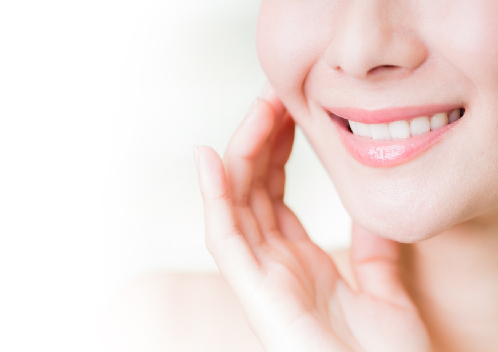
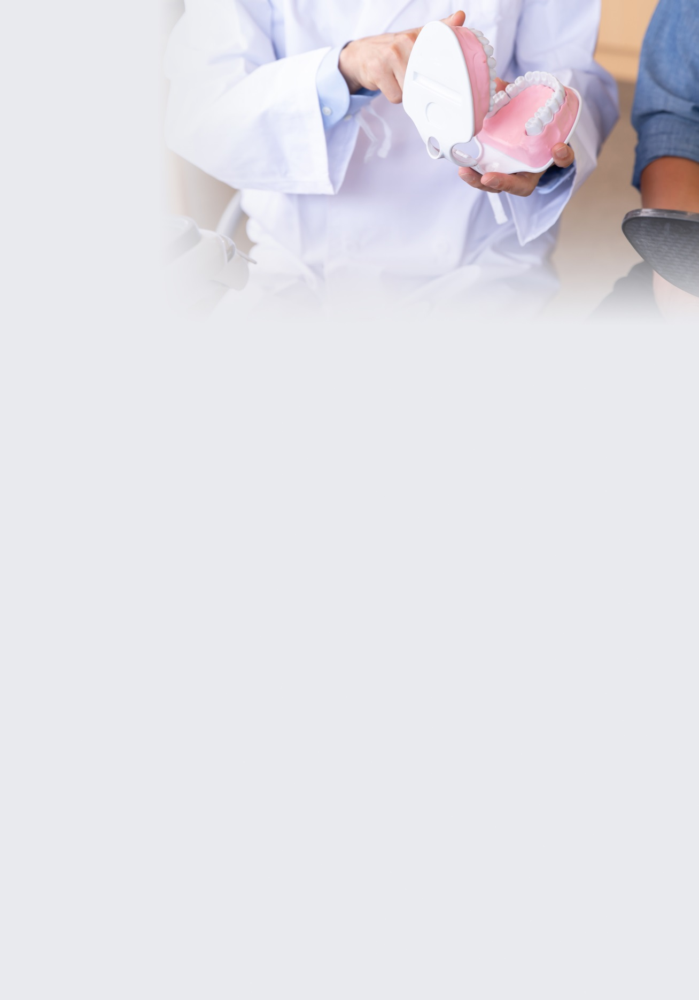
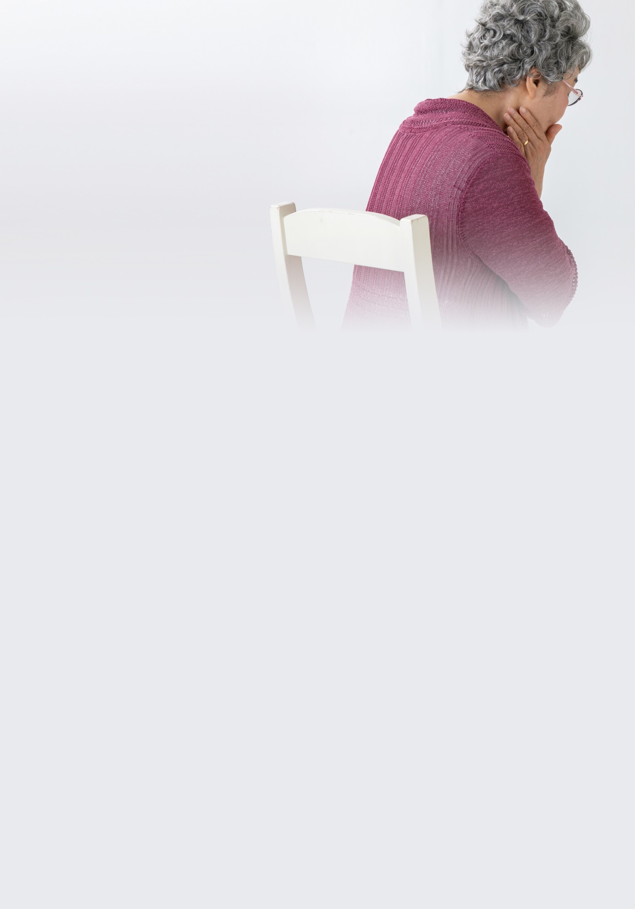
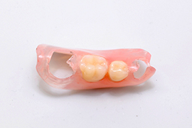
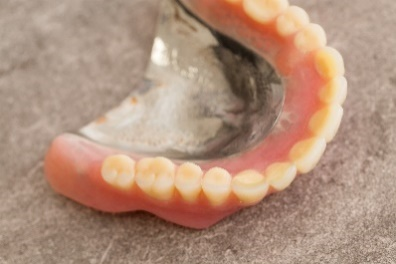
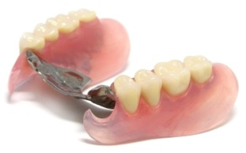
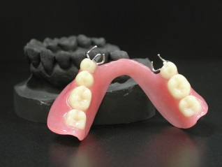
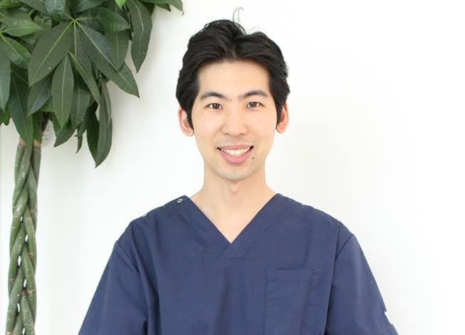

義歯（入れ歯）
歯ぐきの型を取った後、人工の歯を並べたものを装着します。保険適用と自費診療があり、自費は種類も豊富で自分に合ったものを作れます。
京都府亀岡市の入れ歯・義歯治療
よく噛める義歯・目立たない義歯を使っていただくことで、 より良い生活を。患者さん一人ひとりのご希望にお応えする、 見た目にも自然な義歯づくりを心がけています。

GREETING
「よく噛める、よく食べられる」という喜びを感じてもらいたい。
当院は、よく噛める義歯（入れ歯）・目立たない義歯を使っていただくことで、 より良い生活を提供しております。初めて来院された患者さんにもリラックスして いただけるように、義歯のカウンセリングを行っております。
患者さんのご希望にできる限りお応えした治療、見た目にも自然な義歯づくりを 心がけておりますので、義歯のお悩みがございましたら、何でもお気軽にご相談ください。

DENTURE INFORMATION 01
歯ぐきの型を取った後、人工の歯を並べたものを装着します。保険適用と自費診療があり、自費は種類も豊富で自分に合ったものを作れます。
抜けた歯の両隣を削り、連結した人工の歯を被せます。健康な歯を削るため、削った歯の寿命を縮めてしまうデメリットがあります。
抜けた箇所に人工歯根を埋め込みます。天然歯に近い機能があり、残っている歯への負担が小さく、審美性も高いのが特徴です。
DENTURE INFORMATION 02
『最低限度の原状回復』が目的。価格が抑えられます。
見た目が自然・噛みやすい・熱が伝わりやすい・耐久性が高い。
DENTURE INFORMATION 03
お口に合わない入れ歯を装着し続けていませんか？我慢していると、全身の健康に悪影響を及ぼすかもしれません。

口の中の粘膜が「床ずれ」状態になり悪化すると、口腔ガンを引き起こすことがあります。
顎の骨に噛む力が伝わらないと顎が痩せてしまい、義歯が合わなくなります。
合わない義歯は健康な歯に負担をかけ、歯の寿命を縮めてしまいます。
DENTURE INFORMATION 04
※表示価格は税込の目安です。詳細は診察時にご案内します。

209,000円 〜（税込）

385,000円 〜（税込）

660,000円 〜（税込）

935,000円 〜（税込）
DENTURE INFORMATION 05 — 当院おすすめ
噛み合わせと顎の位置を科学的に分析し、患者様に合った理想的な咬み合わせを再現する歯科治療システムです。
660,000円 〜（税込）
顎機能検査などを用いて、噛み合わせの高さや顎の位置を解剖学的な指標から分析します。
前歯でも噛めるよう設計されており、これまで避けていた硬い食材も食べやすくなります。
不具合が生じても入れ歯の一部を少し調整するだけで、しっかりフィットを取り戻せます。
DENTURE INFORMATION 06
歯茎は年齢とともに徐々に衰えていきます。健康な方でも1年で約0.1mm縮んでいくと言われ、 年月に伴う口内の変化や入れ歯の磨耗により、徐々に入れ歯が合わなくなることは自然なことです。 その変化に合わせて、入れ歯もメンテナンスをする必要があります。
歯茎が痩せたまま使用すると一部の歯や歯茎に負担が集中し、歯茎を傷つけたり、 あごの関節周りの筋肉が痛くなることもあります。 入れ歯にとってメンテナンスは必要不可欠なものです。
DOCTOR

Sky Dental Clinic 院長
大矢 竜朗
ACCESS
| 医院名 | Sky Dental Clinic（スカイデンタルクリニック） |
|---|---|
| 住所 | 〒621-0043 京都府亀岡市千代川町小林下戸 9-7 |
| アクセス | JR嵯峨野線「千代川駅」徒歩15分／駐車場10台完備 |
| 電話番号 | 0771-56-8241 |
| 診療時間 | 月・火・水・木・金 9:00〜13:00 / 14:00〜17:00 土曜 9:00〜13:00 / 14:00〜16:30 |
| 休診日 | 日曜日・祝日 |
FAQ